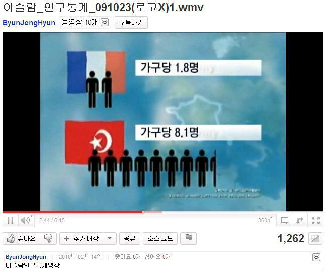
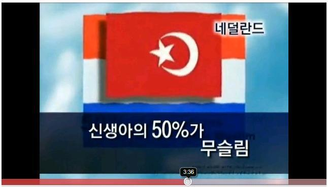
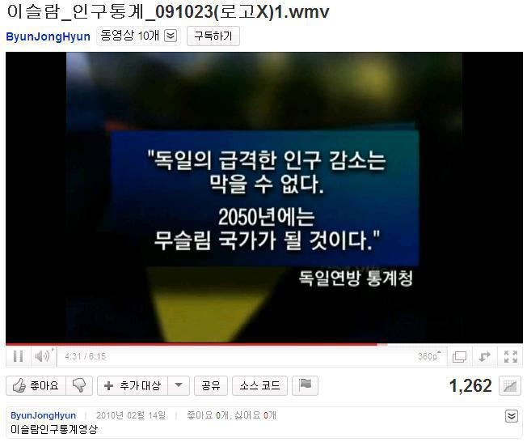
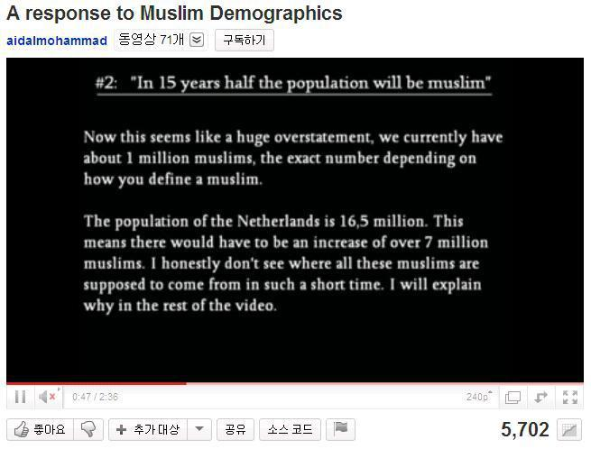
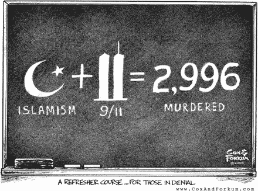
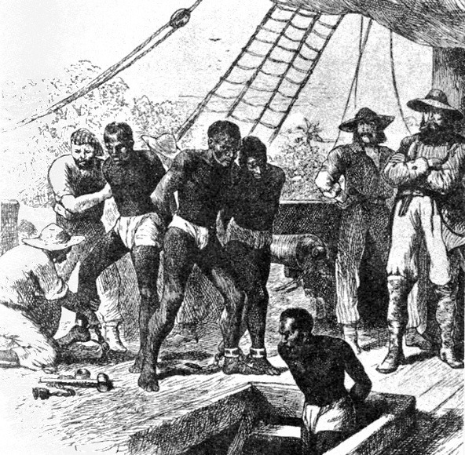
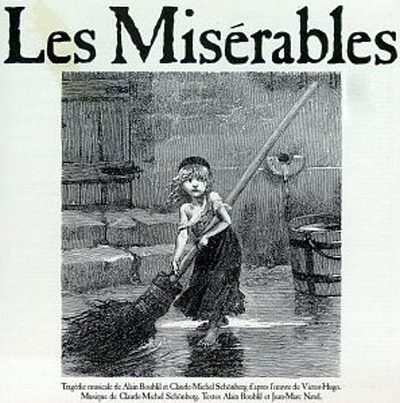

기독교인들은 과연 예수님의 가르침대로 살고 있는가 ?
게시: 2018-10-04T06:30:00+09:00
** 목요일은 예전 다음 블로그의 글을 옮겨놓고 있고, 이건 2011년 2월의 글입니다. 유튜브에 '일부' 개신교 일당이 가짜 뉴스 풀어놓는 것은 이때부터 횡행했던 일이었군요 !
2011년 2월 경에 흥미로운 유튜브 비디오를 하나 보았습니다. 유럽 및 북미에서의 이슬람 인구의 폭발적 증가에 대한 것이었습니다. 그리고 놀랍게도 방금 틀어보니 아직도 이 비디오 클립은 버젓이 온라인 상태입니다.

http://www.youtube.com/watch?v=9EksbSKw6YY
원래 영어로 제작된 이 비디오는, 지도나 그림, 음악도 무척 정성들여 만들었더군요. 그리고 한국어로 번역된 것도, 전문 성우같은 목소리의 한국어로 더빙되었고, 각종 도표도 모두 깔끔한 전문가의 솜씨로 한글화되어 있습니다. 한마디로, 누군가 꽤 돈을 들여서 만든 것이고, 또 그 덕분에, 상당히 신뢰성있는 자료라는 인상을 줍니다. 마치 BBC나 KBS에서 만든 다큐멘터리라는 느낌이 드니까요.
그 내용은 가히 충격적이라고 할 수 있습니다. 유럽은 지금 매우 빠른 속도로 이슬람화되고 있으며, 이대로 가면 불과 20~30년 안에 유럽은 더 이상 우리가 아는 유럽이 아니게 된다는 것입니다. 가령 현재 프랑스의 20세 미만 인구의 30%는 이미 이슬람이라는 것입니다. 그 이유는 일반 프랑스 가정의 가구당 출산률은 1.8명인데, 프랑스 내의 무슬림 출산률은 무려 8.1명이나 되기 때문이라는 것입니다. 이미 프랑스 남부에서는 교회보다 이슬람 모스크가 더 많다고 덧붙입니다.

또한 네덜란드는 15년 내에 전체 인구의 절반이 무슬림이 될 것이라고 합니다. 지금 벨기에 신생아의 50%는 무슬림 가정에서 태어나고 있다고 하고요. 또 유럽의 기독교도들에게는 무시무시한 이야기도 덧붙입니다. 몇년 안에, 러시아군의 40%는 무슬림 병사들로 채워지게 된다는 것입니다. 그 무시무시한 러시아군의 절반 가까이가 이슬람교도라니 !

결정적인 증거도 들이댑니다. 바로 독일 통계청입니다. 여기서, 독일은 2050년에는 무슬림 국가가 될 것이라는 정부 발표를 인용합니다.

염장지르는 소리도 곁들입니다. 서구인들이 가장 혐오하는 중동권 국가 지도자인 리비아의 독재자 카다피의 어록을 인용하는 것입니다. 이제 이슬람은 폭탄 테러 없이도 유럽에서 승리하게 되었다는 것입니다. 바로 유럽내 이슬람 인구 폭발을 통해서요.
이 비디오에서 주장하는 내용들은 사실일까요 ? 한마디로 말해서 그렇지 않습니다. 상식적으로 생각해봐도, 무슨 사람이 토끼나 돼지도 아니고 가구당 8명이 넘는 자녀를 평균적으로 낳을 수 있겠습니까 ? 일단 프랑스에서는 종교별로 인구 조사를 하지 않습니다. 따라서, 누군가 엄청난 돈을 들여서 (국가만이 할 수 있다는) 인구 통계 조사를 사적으로 진행한 것이 아니라면, 프랑스내 무슬림 가정의 평균 출산률이 8.1명이라는 신뢰성 있는 결과는 낼 수 없습니다. 참고로, 프랑스에 가장 많은 무슬림 이민을 보내고 있는 북아프리카의 알제리나 모로코의 가구당 출산률은 2.38명에 불과합니다. 이들이 낭만적인 프랑스로 이민갔다고 해서 갑자기 3배 넘는 출산률을 보여줄 수는 없을 것 같습니다. 그리고 네덜란드의 통계청에 따르면, 전체 인구 중 이슬람 인구는 5%에 불과합니다. 벨기에에서는 6%에 불과하고요. 이들이 순식간에 그렇게 많은 신생아를 낳을 수 있다고는 생각되지 않습니다.
결정적으로, 독일 통계청이 발표했다는 예측, 즉 2050년까지 독일은 무슬림 공화국이 된다는 것은 새빨간 날조입니다. 독일 연방 통계청의 부청장인 발터 라데르마허(Walter Radermacher)에 따르면, 독일의 인구가 감소 추세라는 발표를 한 것은 맞지만, 2050년 무슬림 어쩌고 한 발언은 독일 통계청에서는 나오지 않은 말이라고 합니다. 상식적으로 생각해봐도, 종교적으로 민감한 그런 문제를 정부 기관에서 섣불리 발표한다는 사실 자체가 애초에 믿을 수 없는 일이지요. (이 비디오에 대한 반론은 모두 영국 BBC의 보도를 인용한 것입니다. Source는 http://news.bbc.co.uk/2/hi/8189231.stm 를 참조하십시요.)
카다피의 발언도 그렇습니다. 카다피가 그런 이야기를 했다면 어디 뉴스의 해외 토픽에 반드시 보도가 되었을텐데, 전혀 그런 이야기는 듣지 못했습니다. 아울러, 제가 카다피라면 유럽 내에서 반 이슬람 운동에 유용하게 인용될 그런 민감한 발언을 서방 언론에게 하지는 않았을 것입니다.
그렇다면 누가 이런 허위 정보를 담은 비디오를 비용을 들여가며 만들어 올렸을까요 ? 그것이 누구이든 어느 정도 성공한 것으로 보입니다. 이 원작 비디오는 전세계적으로 약 1천만번 접속되었습니다. 국내용으로 한글 더빙된 버전은 다행히 약 1,200회 정도만 접속되었습니다. 이 원작 비디오를 누가 만들었는지는 모르겠으나, 한국어 비디오를 유튜브에 올린 분은 (이 분이 만드셨는지는 잘 모르겠습니다) 아마도 기독교 신자이신 것 같습니다. (올리신 다른 비디오를 보니 교회 관련 내용이 주종이더군요.)
이 비디오를 누가 만들었는지는 모르겠습니다만, 그 목적은 대략 짐작이 갑니다. 유럽의 이슬람 이민 및 그 2세들에 대한 공포심과 혐오감, 경계심을 불러일으키는 것이 목적일 것입니다. 실제로 프랑스 남부 및 대도시에는 북아프리카에서 온 아랍계 이민들이 사회적 문제를 일으키고 있다는 뉴스를 종종 본 것 같습니다. 특히 프랑스의 극우파들이 그런 무슬림 이민들이 프랑스의 정체성을 뒤흔들고 기존 프랑스인들의 직업 안정성과 치안을 위협한다고 선동하며 자신들의 정치 세력을 늘이려고 하고 있고, 실제로 많은 프랑스인들이 그에 공감하고 있는 편이라는 우려섞인 뉴스도 읽었습니다. 아마 이 비디오는 그런 감정을 더욱 조장하기 위해서 만들어진 것 같습니다. 특히 '기존 교회 중 많은 수가 이슬람 모스크로 이미 바뀌었다'라든가, 카다피의 어록, 그리고 그렇잖아도 위협적인 러시아군을 (잠재적 테러리스트일 수도 있는) 무슬림들이 장악하게 될 것이라는 암시는 멀쩡한 사람들을 분노하게 만들고, 겁에 질리게 만들 수 있을 것 같습니다.
이 비디오를 기독교 세력이 만들었는지, 아니면 그냥 반아랍 인종차별주의자들이 만들었는지는 불분명합니다. 아무튼 공격 대상을 이슬람교를 믿는 무슬림으로 삼은 것은 확실해 보입니다. 그리고 자연스럽게 기독교와 이슬람교의 갈등 구조를 끌어내려고 노력한 것처럼 보입니다.
사실 이 비디오 내용은 너무나 뜻 밖인 것들이 많아서, 저도 처음에 이 비디오를 볼 때 반신반의했습니다. 게다가 공격받는 대상인 무슬림들의 반발은 더욱 강했지요. 덕택에 이 비디오에서 주장되는 바를 하나하나 논리적으로 반박하는 유튜브 비디오도 올라왔습니다. 물론 공격 비디오에 비하면 조회수가 별로 많지 않습니다만, 실은 이런 반박 비디오가 나온다는 것 자체가 그 공격 비디오 원작자의 의도에 놀아나는 행위 같습니다.

(반박하면 할 수록, 점점 더 갈등의 올가미는 조여들어 옵니다.)
그 원작 비디오의 목적은 갈등 조장입니다. 이렇게 반박 자료를 만들어 올리면, 그에 대해 다시 혐오성 댓글이 달리면서, 무슬림과 기독교인들 (혹은 국수주의자들)의 갈등이 점점 더 깊어지는 형태가 되지요. 가령 이 반박 비디오에는 '좋은 자료다'라는 감사 댓글도 있지만, '우리 무슬림들은 더 단결하여 백인 기독교인들이 우리를 무시 못하게 해야 한다'라는 무슬림 수구꼴통의 의견도 달리고, 또 다음과 같은 무슬림 이민들에 대한 혐오 댓글도 달렸습니다.
Just another fag who wants whites gone so his brown friends can rape and pillage.
백인들을 다 쫓아내고 그의 갈색 피부 친구들이 강간과 약탈을 저지르길 바라는 쓰레기가 또 있구만.
저는 사실 무슬림에 대해 잘 모릅니다. 아는 사람도 없고요. 그저 뉴스나 책, 인터넷 댓글에서 읽은 것이 전부지요. 무슬림들이 정말 안 좋은 족속인지 잘 모르겠습니다. 어쩌면 기독교인들에 대해서도 잘 모른다고 할 수 있을 것입니다.
하지만 이 비디오가 기독교 정신에 크게 어긋난다는 것은 확실히 알고 있습니다. 제가 인용한 BBC 보도처럼, 이 비디오의 상당 부분은 날조 및 허위입니다. 성경의 십계명 중에 동성애 하지 말라는 계명은 없지만 '거짓 증언하지 말라'는 계명은 있습니다. 이 비디오를 만든 사람이 기독교적 신앙을 위해서 만든 것이라고 하면, 스스로 기독교 신앙을 저버리는 행위를 한 것입니다. 뿐만 아닙니다. 저는 기독교 정신의 본질은 박애와 믿음이라고 알고 있습니다. 이렇게 다른 종교를 가졌다, 인종이 다르다는 이유만으로 다른 사람들에 대한 증오 및 혐오를 일으키려는 것은 전혀 기독교스럽지 못한 일입니다.
사실 오늘날 기독교인이라는 사람들이 어떤 방식으로 살아가는지 예수님이 본다면 (이건 불교도들과 부처님의 관계도 비슷할 것 같은데) 예수님이 크게 슬퍼하실 것 같지 않으십니까 ?
The Letter of Marque by Patrick O'Brian (배경: 1813년 지중해) -------------------------------------
(잭의 사략선에서 군의관 및 군의관 보조로 일하는 스티븐과 마틴이, 200여명의 승무원들 중 한명의 악마 숭배교인이 있다는 이야기를 나누고 있습니다.)
"정말, 글자 그대로, 공공연하게 악마를 숭배한단 말인가 ?"
"그렇다네. 그 친구는 악마의 이름을 이야기하는 것은 좋아하지 않아서, 손으로 입을 가리고 살짝 이야기해주는데, 그 이름은 공작새라고 하더군. 그들의 사원에 가면 공작새의 초상이 있다네."
"그렇게 괴이한 관점을 가진 친구가 누구인지 물어보면 부적절하려나 ?"
"괜찮다네. 그 친구는 비밀스럽게 이야기한 게 아니거든. 선장의 요리사인 아디(Adi)가 바로 그 친구야."
"난 그 친구가 아르메니아인으로서 그레고리파 기독교도인줄 알았는데."
"나도 그런 줄 알았지. 하지만 실제로는 그 친구는 다스니(Dasni) 인으로서, 아르메니아와 쿠르디스탄 사이에 걸친 지역 출신이라네."
"그럼 그 친구는 신을 전혀 믿지 않나 ?"
"아냐, 믿어. 그 친구와 그 동족들은 신이 이 세상을 만드셨다는 것과, 신의 성스러운 본질을 믿는다네. 그리고 마호멧을 예언자로서 인정하고 아브라함과 선지자들을 인정해. 하지만 그들 말에 따르면, 신께서는 타락한 천사인 사탄을 용서하고 그를 원래 자리로 복위시켜 주었다는 거야. 그들의 관점에 따르면, 그러므로 이 세계의 속된 일들은 악마의 다스림을 받는다는 거지. 그러니까 다른 존재를 섬기는 것은 시간 낭비라는 거야."
"하지만 그 친구는 온순하고 성격 좋은 친구처럼 보이던데. 게다가 확실히 요리 솜씨도 끝내주고 말일세."
"그렇지. 그 친구가 내게 자신의 종교에 대해 친절하게 말해주면서, 진짜 터키 과자 로쿰(lokum, 영어로는 Turkish Delight)를 어떻게 만드는지 보여줬었어. 성서에 나오는 데보라(Deborah)는 정말 죄가 될 정도로 그 과자에 탐닉했었다는군. 그리고 또 자신의 출신지인 다스니 지방의 황량한 산악에 대해서도 말해주었지. 거기서는 사람들이 반지하식 주택에 사는데, 한편에서는 아르메니아인들에게 핍박받고, 다른 한쪽에서는 쿠르드족들에게 괴롭힘을 당한다는 거야. 하지만 그 가족들끼리는 서로 사랑하고 화합이 잘되는데다, 아주 먼 친척에게까지 강한 애정으로 결속되어 있다는군. 분명한 건 다스니 인들은 자기들의 교리처럼 (악마스럽게) 생활하지는 않는다는 거지."
"사실 누가 그러겠나 ? 만약 아디가 우리 기독교인들이 따르는 믿음에 대해 정확히 알고, 우리가 실제로는 어떤 방식으로 살아가는지 비교를 해 본다면, 우리가 그 친구를 쳐다보는 것처럼 그 친구도 우리의 종교 생활에 대해 크게 놀라게 될 걸세."
(Turkish delight... 나니아 연대기에서 마녀가 그 꼬마를 처음 만났을 때 주었던 그 허연 가루가 잔뜩 묻은 젤리같은 과자입니다.)
-------------------------------------------------------------
(당시 열심히 재미있게 보았던 허영만 화백의 '말에서 내리지 않는 무사'의 한장면입니다. 테무진이 흉악범 마을에 사람을 모집하러 갔다가, 사실은 이들이 죄인들이 아니라는 것을 깨닫고 이야기해주는 장면입니다. 이 만화에 나오는 것처럼, 악마교라는 것이 서로 미워하고 죽이고 하는 가르침이라면, 사람들이 모여서 종교를 만들수는 없겠지요. 아마 몇몇 사이코들이 개인적으로 섬기는 컬트 정도로 끝날 것입니다.)
저 위 인용 소설 속의 대화 내용처럼, 성서에서 예수님이 말씀하신 것은 자신이 가진 재물을 모두 가난한 사람들에게 나누어주고 자신을 따르라고 했지만, 제가 아는 기독교인들 중에는 그런 사람을 거의 보지 못했습니다. 아, 교회에 정말 많은 돈을 헌금하는 사람들은 듣거나 보았습니다. 그러면 교회에서는 그 돈으로 크고 호화로운 교회 건물을 짓거나 외국으로 선교사를 파견하여 무슬림 아이들에게 먹을 것을 주며 찬송가를 부르게 하더군요. 그것이 예수님이 말씀하신 가난한 사람들에게 재물을 나눠주라고 한 것은 아닐텐데요. 또 원수가 뺨을 때리거든 반대쪽 빰을 내밀라고 하셨지요. 하지만 미국은 쌍동이 빌딩이 공격당했을 때, 왜 저들이 미국을 공격했는지에 대해서 진지한 성찰은 별로 하지 않은 것같고, 기다렸다는 듯이 이라크와 아프가니스탄을 들이쳤습니다. 당시 미국 대통령인 조지 부시는 정말 기독교를 열심히 믿는 사람이었습니다. 그런데 그 반응은 예수님의 가르침을 따르는 사람같지는 않고, 그냥 세계 유일의 강대국 지도자답더군요. 그래서 더욱 더 많은 죽음과 비극이 반복 재생산되고 있습니다.

(누군가 우리를 공격했으니 우리는 더 강하게 보복하겠다 !!! 이건 예수님의 가르침이 아니라 함무라비 법전의 가르침이지요.)
예수님의 가르침이 인간의 이해 관계를 거치면서 매우 이상한 방향으로 발전되는 경우도 있습니다. 대표적인 예가 노예 제도지요. 17~18세기 당시 노예 무역이 한창일 때, 천만뜻밖에도 노예제 찬성론자들은 기독교적인 이론으로 아프리카에서 흑인들을 잡아와 노예로 부려먹는 것을 합리화했습니다. 성경에서도 노예제에 대해 부정적인 말씀이 없고, 오히려 노예는 주인의 말을 잘 들어야 한다고 나와 있을 뿐더러, 아프리카에서 예수님을 모르고 이교도로 살다가 그 영혼이 영원히 저주받는 것보다는, 차라리 백인 농장주의 농장에서 노동을 하면서 기독교로 전도시키는 것이 흑인들의 영혼을 위해 더 나은 조치라는 것입니다.

(이것이 정말 예수님의 가르침대로 세상을 사는 방법인가요 ? 하지만 결국 노예제 폐지도 같은 예수님의 가르침대로 행동하는 기독교 단체들의 노력이 큰 몫을 한 것도 사실입니다. )
TV 뉴스를 보니 어떤 대형 교회 목사님은 시가 3억원 짜리 외제차를 (아마 벤틀리였던 것 같은데) 타고 다닌다고 해서 구설수에 오른 적이 있었습니다. 그 목사님의 흥분된 인터뷰를 잠깐 들어보니 이건 선물을 받은 것인데, 자기가 이 차를 교회에 봉헌했다고 하더군요. 그 인터뷰를 들으니 저도 덩달아 흥분이 되던데요. 그러면서 빅토르 위고의 장발장 중 한 장면이 떠올랐습니다.

레미제라블 (Les Miserables) by Victor Higo (배경 : 1810년대 나폴레옹 치하의 프랑스) ----------------------
(디뉴 지방의 담당 주교가 교구에서 이런저런 구제 활동을 벌이다보니, 비용이 쪼들리게 되었습니다. 그래서 생활이 어렵다고 한탄을 하니, 주교의 식모인 마글로아 부인이 예전 왕정 시대 때는 주교에게 마차 및 여행 경비를 정부에서 보조해주었다고 맞장구를 칩니다. 그 말을 듣자마자 주교는 정부에 마차 및 여행 경비 보조를 신청합니다. 정부에서는 토의 끝에, 주교에게 마차, 우편, 여행 경비로 3천 프랑의 예산을 배정해줍니다.)
이것이 그 지역 시민 사회에 상당한 격분을 불러 일으켰다. 또, 예전 혁명 시절에 500인 위원회의 의원이었고 뷔르메르 18일 사건 (나폴레옹의 쿠데타)을 지지했던, 현직 원로원 의원으로서 그 주교의 관할지인 디뉴 근처에서 멋진 원로원석을 차지하고 있는 거물급 인사도 이 움직임에 동조하여, 다음과 같은 분노의 편지를 비고 드 프레므뉴(Bigot de Premeneu) 씨에게 보냈다.
(역주 : 500원 위원회는 나폴레옹이 쿠데타로 해산시킨 의회입니다. 그런데 나폴레옹의 쿠데타를 지지한다는 것은 좀 이상하지요. 이 원로원 의원은 그저 권력만을 좇아 움직이는 지조없는 사람이라는 뜻입니다. 비고 드 프레므뉴라는 사람은 실존 인물로서, 나폴레옹 민법전의 편저자이자 나폴레옹 밑에서 종교성 장관을 지낸 사람입니다.)
"마차 비용이라고요 ? 주민이 4천명 밖에 안되는 좁은 마을에서 무슨 마차가 필요합니까 ? 우편요금과 설교 여행 경비라고요 ? 이런 여행의 목적이 무엇입니까 ? 길도 없는 산간 마을에서 편지를 나르느라 마차가 필요하다는 것이 말이 되나요 ? 이 지방 사람들은 말 등에 올라타고 여행을 합니다. 샤토-아르누의 듀랑스에 있는 다리는 황소가 끄는 달구지 하나가 겨우 통과할 정도입니다. 이 성직자라는 사람들은 모두 똑같습니다. 탐욕스럽고 구두쇠이지요. 이 주교라는 사람도 처음에는 도덕적인 인물처럼 시작하고는 결국 다른 성직자들과 똑같이 행동하는군요. 이 주교는 유개 마차와 멋진 이륜 마차를 갖고 싶다는거지요. 예전 시절의 주교들이 가진 모든 사치품을 다 가지고 싶다는 겁니다. 이런 비공식적인 성직자들이라니 ! 백작 각하, 황제 폐하께서 이런 협잡꾼들을 다 제거해버리지 않으신다면 일이 제대로 처리된다고 할 수 없을 것입니다. 교황은 물러가라 ! (이 시절에는 나폴레옹과 교황과의 사이에 갈등이 있었습니다.)" 등등
다른 한편으로 주교관 식모 마담 마글로아는 무척이나 기뻐했다. 그녀는 주교의 여동생인 밥티스틴 양에게 이렇게 이야기했다.
"아주 좋아요. 이제 주교님께서 비록 다른 사람 생각만 하시는 것으로 시작은 했지만, 결국 자신 생각도 하셔야 하거든요. 그분이 자선활동에 모든 돈을 다 써버리셨지만 이제 우리를 위한 3천 프랑이 있으니, 고생이 끝난거지요 !"
하지만 그날 저녁, 주교는 다음과 같은 노트를 적어서 여동생에게 전달했습니다.
마차 및 여행 경비 내역
구제 병원의 환자들을 위한 고기 수프 1500 프랑
엑스(Aix) 지방의 어머니회 250 프랑
드라귀냥(Draguignan) 지방의 어머니회 250 프랑
버려진 아이들 비용 500 프랑
고아들 비용 500 프랑
이것이 미리엘 주교의 개인 비용이었다.
---------------------------------------------------------------------
물론 이 미리엘 주교가 나중에 장발장에게 은촛대를 건네주는 그 착한 신부님입니다... 원래 서양 속담에 as poor as church mouse 라는 말이 있지요. 신도들이 헌금을 안 내서 교회 쥐가 가난한 것이 아닙니다. 예수님 말씀따라, 돈될 만 한 것은 모두 내다 팔아 가난한 사람들을 구제하기 때문에 교회에 돈이 없는 것이지요. 부디 그 대형 교회 목사님도 레미제라블의 이 장면은 좀 읽어보셨으면 해요. 이미 읽어보셨을까요 ? 그렇다면 약간 비극이겠네요.